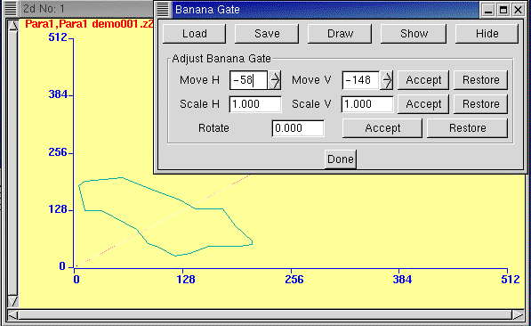

To draw a polygon in a 2d spectrum window, click "Draw". This
button now changes to "End Draw". Click on the window to draw
the polygon. One can go in any order, clockwise or anti-clockwise
without any kind of restriction (even criss-crossing polygons
are allowed!). Users of ACOFF and ACT
restricted to drawing only clockwise and not allowed to turn upward
more than once will appreciate this new feature.
When you come near the end of the polygon, click "End Draw" and LAMPS will draw the last line required to close the polygon. Do not try to click near the last point to close the polygon yourself.
The maximum number of vertices for the ploygon is 200.
After "End Draw" the banana gate is in memory and if the Banana Gate window is closed, XProj and YProj will operate on the banana gate.
To turn off the banana gate click "Hide". For this you may have to invoke BGate again from the context menu if you already closed the Banana Gate window.
One can "Save" banana gates to a file. The saved banana gates can be recovered by the "Load" button. Saved banana gates can also be used for gating list mode data during analysis and also gating incoming CAMAC data during acquisition. See the chapter Setup in the section SPECTRA SETTINGS.
The following functions are provided to adjust a banana gate after it has been drawn:
Move H: +ve and -ve values are used to move the
banana gate to the right or left.
Move V: For up and down motion.
Scale H: Causes the banana gate to be streched or shrunk
in the horizontal direction.
Scale V: Similar, for the vertical direction.
Rotate: +ve or -ve values give clockwise or anticlockwise
rotations of the polygon as a whole.
Each of these butons has an Accept and Restore function
with obvious functionality.
Note:
(a) There is only 1 banana gate in memory at any time. This is the last banana gate that was drawn or read from a file.
(b) While using BGate "Show" button or "Load" button the banana gate is drawn on the spectrum without caring about which 2d spectrum the bgate is really meant for. LAMPS behaves this way so that one can copy a banana gate originally drawn for some other 2d spectrum. However the banana gate file actually stores the ADC numbers of the X and Y axes of the 2d spectrum. When the banana gate is applied for list mode analysis these ADC numbers become important.
The banana gate file is a text file with a name *.ban. After it is created one can edit it using a text editor if desired. This is useful if e.g. one wants to create banana gates using energy loss values from the TRIM program. One thing to note is that the banana coordinates in the file are always in a scale of 8192 irrespective of the dimensions of the 2d spectrum and independent of ADC resolutions. This convention is used so that the same banana gate can be used for 2d spectra having different resolutions. A sample banana gate file:
LAMPS BANANA GATE FILE: /home/ambar/work/sample.ban
XPar= 3
YPar= 2
N= 4
i,X,Y= 0 3653 4152
i,X,Y= 1 5978 3928
i,X,Y= 2 5978 1571
i,X,Y= 3 4816 1347
END OF FILE